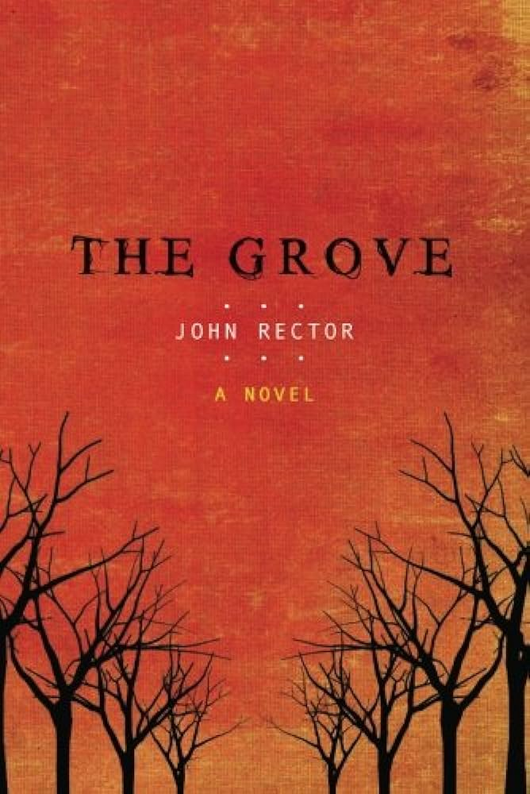

Vote for the book of the month, sign up for recommendations, and contact us for questions and feedback on our Form page!
Forms!
Book of the Month!

The Grove by John Rector
In this dark, psychological thriller, farmer Dexter McCray becomes both a detective and a suspect. He is a man fighting to escape a troubled past, but after waking from an alcoholic blackout to discover his tractor stuck in a ditch and the body of a teenage girl in the cottonwood grove bordering his cornfield, he wonders if it's a fight he cannot win. In the hopes of proving his innocence, he sets out to find the truth. Now, isolated from friends and family and devoid of an alibi, he turns to the only person left who can help pick up the pieces of his shattered life...the dead girl herself. Rector understands the complexities of a haunting tale and a compelling who-done-it, and he takes listeners on a ride that is both memorable and unsettling.Top 10 Favorites
| Rank | Cover | Title | Author | Comments |
|---|---|---|---|---|
| 1 |
|
A Head Full of Ghosts | Paul Tremblay | "I didn't know if it was real by the end!" |
| 2 | Not a Sound | Heather Gudenkauf | "I had chills! Imagine not being able to hear a killer..." | |
| 3 | 100 Cupboards | N.D. Wilson | "Perfect for a family reading night. My kids loved this trilogy!" | |
| 4 | ||||
| 5 | ||||
| 6 | ||||
| 7 | ||||
| 8 | ||||
| 9 | ||||
| 10 |